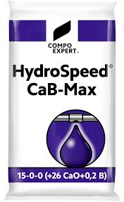
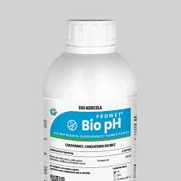
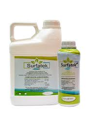
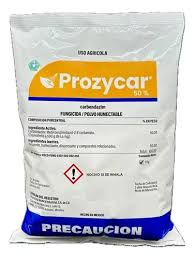

Bioestimulantes
Frutime

Regulador de crecimiento que apoya la floración y el amarre de fruto.
En AgroSana surtimos fertilizantes, fungicidas, coadyuvantes y bioestimulantes para huertas y parcelas de Zihuatanejo y sus alrededores, con asesoría para elegir el producto adecuado para cada cultivo.
Ver productos
Como en toda etiqueta, las precauciones van primero.
Lee la etiqueta completa antes de comprar, mezclar o aplicar: ahí vienen la dosis, los cultivos y los días de espera antes de cosechar.
Usa equipo de protección: guantes, lentes, mascarilla, camisa de manga larga y botas.
Aplica sin viento ni lluvia, temprano o al atardecer, y lejos de casas, pozos y arroyos.
Guarda bajo llave, en su envase original y lejos de niños, animales y alimentos.
Haz el triple lavado de los envases vacíos, perfóralos y llévalos a un centro de acopio.
Lávate al terminar y lava la ropa de trabajo aparte. No comas, bebas ni fumes mientras aplicas.
Si alguien se intoxica, busca atención médica de inmediato y lleva la etiqueta del producto.
Cada producto con su categoría, como en su etiqueta.
Mostrando 5 productos
Regulador de crecimiento que apoya la floración y el amarre de fruto.

Acidificante, dispersante y humectante para el agua de aplicación.
Fertilizante soluble con calcio y boro para la firmeza del fruto y el amarre.

Surfactante que mejora la cobertura de la aspersión sobre la hoja.

Fungicida en polvo humectable con carbendazim al 50 %.
Casa agroquímica de Zihuatanejo para huertas de mango, palmares de coco, maíz y hortalizas.
Visitamos tu parcela para revisar el cultivo y recomendarte qué aplicar y cuándo, según la etapa y el clima.
Productos con su etiqueta e instrucciones de uso en español.
Zihuatanejo, Petatlán, La Unión y comunidades cercanas.
¿No sabes qué producto necesita tu cultivo? Te asesoramos.
Datos de contacto de ejemplo para la práctica.